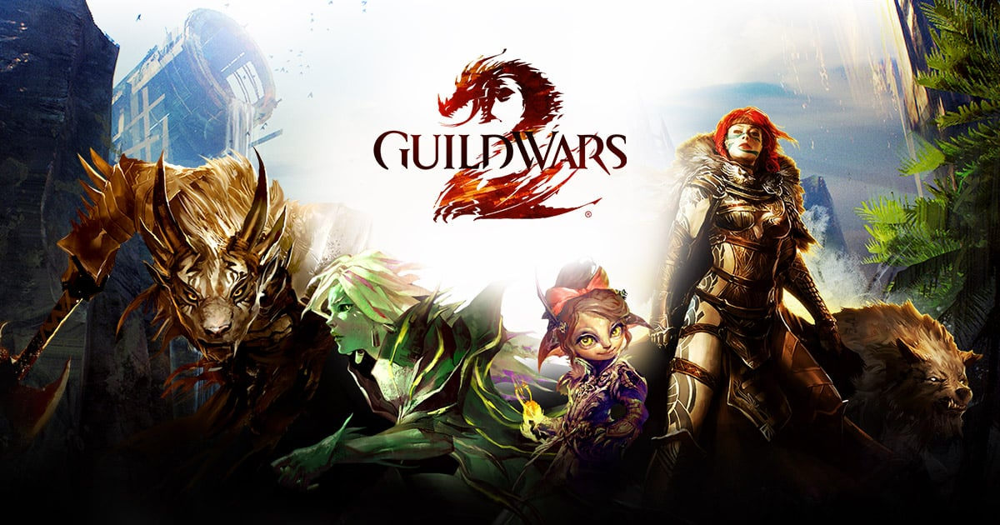

Introdução
Guild Wars 2 é um jogo de RPG online gratuito para vários jogadores desenvolvido pela ArenaNet e publicado pela NCSoft. Situado no mundo de fantasia de Tyria,
o jogo principal segue o ressurgimento de Destiny's Edge, uma guilda dissolvida dedicada a lutar contra Dragões Anciões, entidades colossais no
estilo Lovecraftiano que assumiram o controle de Tyria desde o Guild Wars original (2005). um enredo que termina na terceira expansão End of Dragons (2023).
O jogo se passa em um mundo persistente com uma história que avança em ambientes instanciados.

Estilo de Jogo
Guild Wars 2 permite ao jogador criar um personagem a partir de uma combinação de cinco raças e nove profissões. As cinco raças são os humanos,
os charr (introduzidos em Profecias), os asura e os norn (introduzidos em Eye of the North), e os sylvari, raça exclusiva de Guild Wars 2.
As profissões são divididas em classes de armadura: " estudiosos" com armaduras leves, "aventureiros" com armaduras médias e "soldados"
com armaduras pesadas — cinco das profissões reaparecem de Guild Wars. Não existe uma classe de cura dedicada, pois os desenvolvedores
sentiram que tornar necessário que cada grupo tivesse um curandeiro era restritivo.